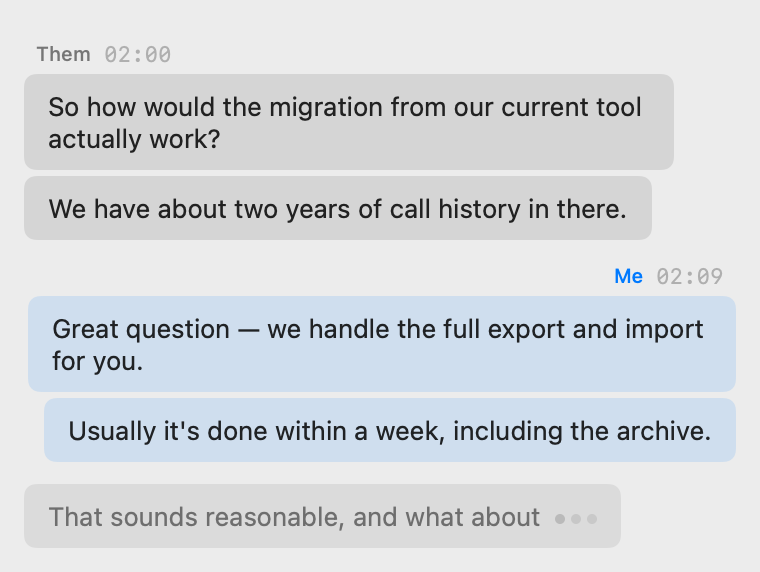

Parrot writes the transcript in whole sentences, not word soup. While someone is talking you'll see a light preview filling in, and the moment they pause, the finished sentence lands as a bubble. If someone talks for a very long stretch without pausing, Parrot commits what it has every 12 seconds so the transcript never falls far behind.
One honest note: a sentence can only be finished once the speaker actually pauses, so the final text always arrives a beat after the words. That beat is the price of getting clean, complete sentences instead of fragments. The preview keeps you company in the meantime.
Out of the box Parrot auto-detects the language per sentence, which is handy for mixed-language calls but can occasionally guess wrong on a noisy bit, and the preview can flicker through a wrong language before the real sentence lands. If your calls are always in one language, set it explicitly in Settings → Transcription and everything gets steadier.
A language you set is followed exactly, so a Turkish call with English picked comes out as English-sounding nonsense. Parrot checks each side of the call every half minute or so of speech to catch this, including a call that changes language halfway. If it hears a different language, a banner across the top of the call screen says This call sounds like Turkish, but Parrot is set to English (with whatever languages apply). Click Switch to Turkish and the rest of the call is transcribed in Turkish, and so are your next calls; Keep English closes it for this call.
Parakeet v3 is the fastest on-device model, but it only knows 25 European languages (English, German, French, Spanish, Italian, Portuguese, Dutch, Russian, Ukrainian, Polish and others). Turkish, Arabic, Chinese, Japanese, Korean, Hindi and Tamil aren't among them, and on those it doesn't stay quiet: it writes European-looking nonsense.
So with Parakeet and the language on auto-detect, Parrot holds each side of the call for its first ten seconds or so of speech, checks the language, then sends it to Parakeet or, for anything else, to Whisper. Your first lines appear a few seconds later than usual while it checks; the bar says Checking the language. Whisper is only loaded when a call needs it. If a side switches language later, Parrot notices within about a minute, moves that side to Whisper and redoes its last stretch. A language you pick by hand is used as is: pick one Parakeet doesn't know and the call uses Whisper.
Quickest of all: pick the Call language on the dashboard, under Start recording, before you hit record. With nothing to detect, the call gets the right engine from the first word.
Using Deepgram? Leave the language on auto-detect for a call that mixes languages, even in one sentence: it knows every language in the list and follows the switch. Pick a language by name only when the whole call is in one.
Whisper has never met your company name. If the transcript keeps mangling names or jargon ("LaunchEase" becoming "Lawn Cheese" is a real example from this very app's history), add those words in Settings → Transcription → Custom vocabulary, separated by commas. Parrot whispers them to the model on every pass so it spells them right.
On-device transcription is the default and needs no account. If you prefer, you can transcribe through Groq or stream through Deepgram with your own API keys in Settings → Transcription. If a cloud engine hiccups mid-call, Parrot quietly falls back to the on-device model for the affected part, so a flaky connection never costs you transcript.